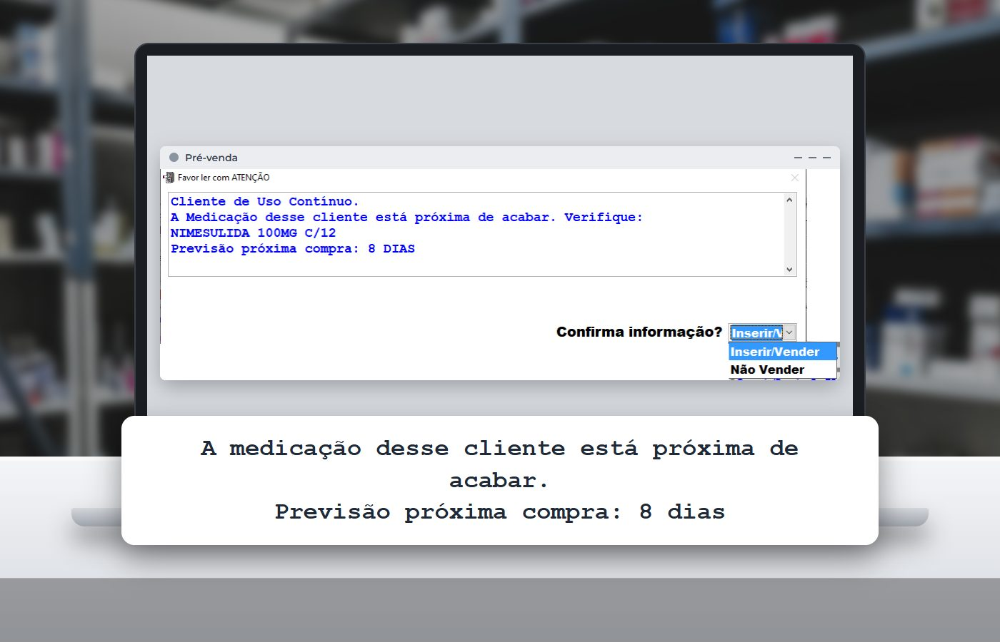

Em 30 segundos
- A Lei 15.357/2026, publicada em 23 de março, permite farmácia ou drogaria dentro da área de vendas do supermercado.
- O espaço precisa ser delimitado, separado e exclusivo, com farmacêutico durante todo o horário e sem remédio em gôndola aberta.
- O supermercado pode operar a farmácia com o mesmo CNPJ ou por contrato com uma farmácia licenciada.
- Para a farmácia independente, a resposta está no que o mercado tem dificuldade de copiar: conhecer o cliente, lembrar da reposição e atender bem no balcão.
O cliente entra no supermercado para fazer a compra do mês. Entre o hortifrúti e o caixa, passa por uma farmácia com farmacêutico, balcão e remédio de receita. Ele aproveita, compra o remédio de uso contínuo ali mesmo e vai embora. Até pouco tempo, essa cena não era permitida no Brasil. Agora é.
Se você tem farmácia, esse é um assunto para 2027. E se você tem supermercado e pensa em abrir uma farmácia, também.
O que a Lei 15.357 permite
A Lei nº 15.357, de 20 de março de 2026, publicada no Diário Oficial em 23 de março, mudou a Lei 5.991/1973, que trata do comércio de medicamentos. Ela autoriza farmácias e drogarias dentro da área de vendas dos supermercados, com regras claras:
- Espaço próprio. O local precisa ser físico, delimitado, separado e exclusivo para a atividade farmacêutica.
- Duas formas de operar. O supermercado pode tocar a farmácia diretamente, com a mesma identidade fiscal, ou contratar uma farmácia ou drogaria já licenciada.
- Farmacêutico o tempo todo. É obrigatória a presença de farmacêutico habilitado durante todo o horário de funcionamento.
- Controlados com cuidado extra. O medicamento sujeito a controle especial só é entregue depois de pago. A outra opção é levá-lo do balcão até o caixa em embalagem lacrada e inviolável.
- Nada de remédio no corredor. Fica proibido oferecer medicamento em área aberta ou sem separação completa, como bancadas, estandes e gôndolas externas.
- Venda digital liberada. Farmácias licenciadas podem usar canais digitais e plataformas de comércio eletrônico para logística e entrega, cumprindo a regulamentação sanitária.
O supermercado pode ter farmácia, mas ela precisa funcionar como farmácia: espaço próprio, farmacêutico presente e as mesmas regras sanitárias de qualquer drogaria.
Quem já está abrindo
As grandes redes se mexeram rápido. Em julho, o Assaí inaugurou a primeira farmácia dentro de uma loja em São Paulo, com cerca de 140 m² e perto de 10 mil itens, segundo a Exame. Os remédios de receita ficam atrás do balcão, e a loja também oferece serviços como aferição de pressão e aplicação de injetáveis. A meta é chegar a 25 farmácias no estado até o fim de 2026.
A ICTQ registrou outras redes estudando o modelo e ouviu a Abras, a associação dos supermercados. O presidente da entidade espera uma implantação gradual e não descarta aquisições ou parcerias com farmácias independentes. Isso é uma expectativa do setor, não um fato consumado, mas mostra para onde o mercado olha.
Para a farmácia de bairro, a conclusão prática é simples: o cliente vai ter mais um lugar para comprar remédio, e esse lugar ele já visita toda semana.
Vai abrir farmácia dentro do mercado? O sistema precisa acompanhar
Quem vem do varejo de alimentos costuma subestimar a parte operacional da farmácia. A lei exige espaço separado, e a gestão também precisa ser separada. Antes de inaugurar, confira estes pontos com sua equipe e seu fornecedor de sistema:
1. Estoque por lote e validade
No mercado, o controle de validade muitas vezes é feito por amostragem na gôndola. Na farmácia, é preciso saber qual lote foi vendido e para quem, porque o recolhimento de um lote pode chegar a qualquer momento. No Prosystem, o lote fica registrado em cada venda e a tela de venda destaca os produtos pré-vencidos.
2. Controlados e escrituração
Medicamento controlado exige escrituração no SNGPC, além da conferência de receitas. A lei ainda pede que ele só seja entregue depois de pago, ou que siga lacrado do balcão até o caixa. Defina antes de abrir como esse fluxo vai funcionar na sua loja: onde fica a pré-venda, quem recebe o pagamento e como a escrituração acompanha cada venda.
3. Frente de loja que separa as vendas
Se a farmácia opera com o mesmo CNPJ do supermercado, ainda assim você vai querer ver o faturamento, a margem e o estoque dela separados do resto da loja. Se a operação é por contrato com outra farmácia, a separação é total: outro CNPJ, outra nota, outro sistema. Combine isso com a contabilidade antes de escolher o modelo.
4. Venda pelo site e por aplicativo
A lei deixa claro que a farmácia licenciada pode vender por canais digitais. O Prosystem integra com lojas virtuais e com aplicativos de delivery de farmácia, mantendo o estoque do site alinhado ao da loja.
Converse com o responsável técnico, com a vigilância sanitária do seu município e com a contabilidade. A licença, a escala de farmacêuticos e o modelo fiscal definem o resto do projeto.
Vai abrir uma farmácia ou já tem uma?
Fale com a ProSystem e veja como lote, validade, controlados e frente de loja ficam organizados no mesmo sistema.
E a farmácia do bairro? Comece pelo cliente que já é seu
O supermercado ganha em fluxo de pessoas e em compra grande. A farmácia independente ganha em proximidade, conhecimento do cliente e atendimento. O problema é que, sem sistema, essa vantagem fica só na memória do balconista. Veja onde ela vira rotina.
Lembrar da reposição antes do concorrente
O cliente de uso contínuo é o mais exposto. Se o remédio dele acaba no dia da compra do mês, ele resolve no mercado. No Prosystem, a posologia informada na venda vira uma data de próxima compra. Se o cliente passar na farmácia nos 9 dias anteriores ao fim da medicação, o balcão recebe o aviso e oferece a reposição ali mesmo.

O mesmo controle gera a lista de quem deve comprar nos próximos dias. Como dado de medicamento é dado de saúde, o contato ativo precisa de autorização registrada e cuidado com a LGPD. Explicamos o passo a passo no artigo sobre cliente de uso contínuo.
Dar um motivo para o cliente voltar
Desconto para todo mundo não cria vínculo. Um cartão fidelidade com política por grupo de clientes, ou um programa de pontos e cashback integrado ao sistema, faz o cliente lembrar de você na hora de comprar. O mercado também tem programa de fidelidade, então a diferença está em premiar quem compra remédio e cuidado com você todo mês.
Não perder a venda do item em falta
Quando o cliente pede um produto que acabou, ele pode ir buscar no mercado da esquina. Com o registro de encomendas no caixa, o pedido entra na compra e o sistema avisa quando o produto chega. E o indicador de perda de vendas mostra quais itens mais fazem o cliente sair sem comprar.
Atender como o mercado não atende
Aferição de pressão, orientação e acompanhamento são o ponto forte de quem conhece o cliente pelo nome. Com a atenção farmacêutica registrada no sistema, o histórico do paciente fica disponível para qualquer farmacêutico da equipe.
Saber que a dona Maria toma o remédio da pressão todo mês, que ela prefere receber em casa e que gosta de ser atendida pela mesma farmacêutica. Isso é relacionamento, e relacionamento se organiza com cadastro e rotina.
A parceria também é caminho
A lei permite que o supermercado contrate uma farmácia já licenciada para operar dentro da loja. Para a farmácia independente bem organizada, isso pode ser uma oportunidade de crescer sem abrir um ponto do zero.
Quem chega para negociar com estoque em dia, controlados escriturados, indicadores claros e equipe treinada passa mais confiança. Antes de fechar qualquer contrato, avalie com a contabilidade e com um advogado quem responde pelo quê, como fica a nota fiscal e como o caixa do mercado recebe as vendas da farmácia.
Checklist da farmácia para 2027
- Identifique o cliente na venda. Sem cadastro, não existe uso contínuo, fidelidade nem histórico.
- Revise o cadastro dos itens de uso contínuo. Comece pelos que mais vendem.
- Defina o seu programa de fidelidade. Cartão por grupo de clientes ou pontos e cashback, com regra simples para a equipe explicar.
- Registre as encomendas e as perdas de venda. É assim que você descobre o que o cliente foi buscar em outro lugar.
- Coloque a farmácia no digital. Loja virtual ou aplicativo de delivery, com o estoque alinhado ao da loja.
- Mantenha lote, validade e controlados em dia. Isso protege a farmácia na fiscalização e numa futura parceria.
A farmácia dentro do supermercado vai crescer aos poucos, como a própria Abras prevê. A farmácia de bairro tem esse tempo para se organizar e chegar a 2027 conhecendo melhor o próprio cliente.
Perguntas frequentes
Supermercado pode ter farmácia?
Sim. A Lei 15.357/2026, publicada em 23 de março de 2026, permite farmácia ou drogaria na área de vendas do supermercado, em espaço delimitado, separado e exclusivo, com farmacêutico durante todo o horário de funcionamento.
O supermercado pode vender remédio na gôndola?
Não. A lei proíbe oferecer medicamento em área aberta ou sem separação completa, como bancadas, estandes ou gôndolas externas. O remédio fica dentro do espaço da farmácia.
Como fica a venda de medicamento controlado na farmácia do supermercado?
O medicamento sujeito a controle especial só pode ser entregue depois do pagamento. Outra opção prevista na lei é levá-lo do balcão até o caixa em embalagem lacrada e inviolável. A escrituração segue as regras de qualquer farmácia.
A farmácia do supermercado precisa ter o mesmo CNPJ do mercado?
Não necessariamente. A lei permite que o supermercado opere a farmácia diretamente, com a mesma identidade fiscal, ou por contrato com uma farmácia ou drogaria licenciada. O modelo deve ser definido com a contabilidade.
Como a farmácia independente pode competir com a farmácia do supermercado?
Com o que depende de conhecer o cliente: lembrar da reposição do uso contínuo, programa de fidelidade, registro de encomendas, atenção farmacêutica e venda digital com entrega. Um sistema de gestão transforma isso em rotina da equipe.
Fontes
- Lei nº 15.357, de 20 de março de 2026 (Planalto)
- Fomos à farmácia do Assaí: supermercado e drogaria em uma única loja (Exame, 20/07/2026)
- Supermercados aceleram entrada no mercado farmacêutico após sanção de nova lei (ICTQ, 04/06/2026)
- Uso contínuo ativo: não perca vendas (Universidade Prosystem)
Conteúdo informativo, atualizado em 4 de novembro de 2026. Tela real do Prosystem, com dados fictícios e nome de produto ocultado. Este artigo não substitui a orientação do responsável técnico, da vigilância sanitária e da contabilidade.